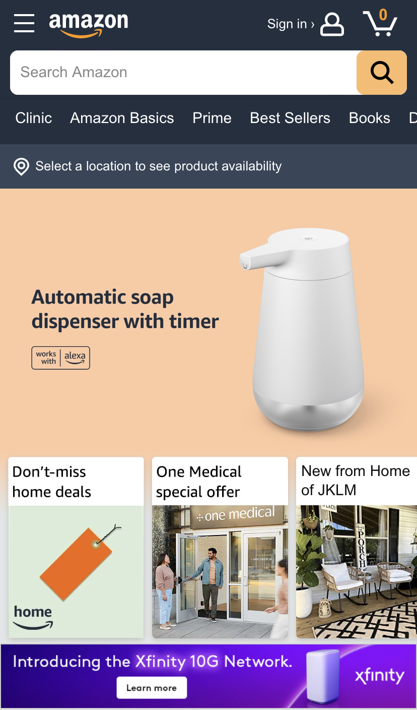
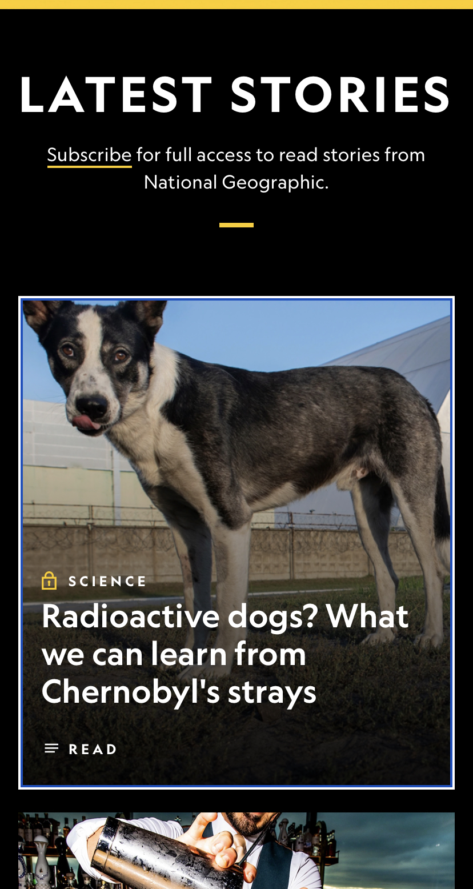
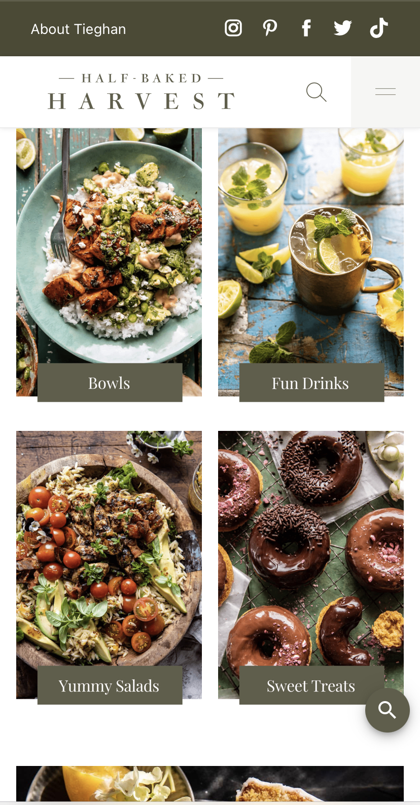

Hicks's Law
Amazon
amazon.com Hick's Law states that the more options that are available to a person, the longer it will take for them to make a decision. Amazon is a great exampls of Hick's Law in web design as it present's it's viewers with so many optiont when you first open the page. You can search for an item you need, or you can view products by category. If you don't know what you need, there are four links to recommendations for "lightening deals" and other special offers. I do not think that Amazon's overall mobile view port is very clean, but they do a good job at making their viewers stay for a while and browse with their use of Hick's Law in their design.
Contrast
National Geographic
nationalgeographic.com Contrast is probably one of the easiest design elements to recognize but one of the hardest to make look good. The white text against the black background is the main contrasting element that adds a sophistcated look to the page. The other main contrasting element on the page is the yellow underline under the word "subsricbe." Not only does the yellow contrast against the black background and the white text, but it draws the viewers eyes to it almost immediately. I found this to be a great design element because the most importnat thing for a site/magazine like National Geographic would be to get more subscribers.
Alignment
Half-Baked Harvest
halfbakedharvest.com Half-Baked Harvest is my favorite food blog that I follow. I wanted to focus on her website, because her design us very clean and friendly looking. When analyzing the Half-Baked Harvest site, I noticed that the overall site had great alginment, which gave the overall site a welcoming and refreshing look. The picure I included shoes four images of different recipes all equally aligned in the viewport. I was impressed with the mobile viewport of this site and how easy it was to navigate.